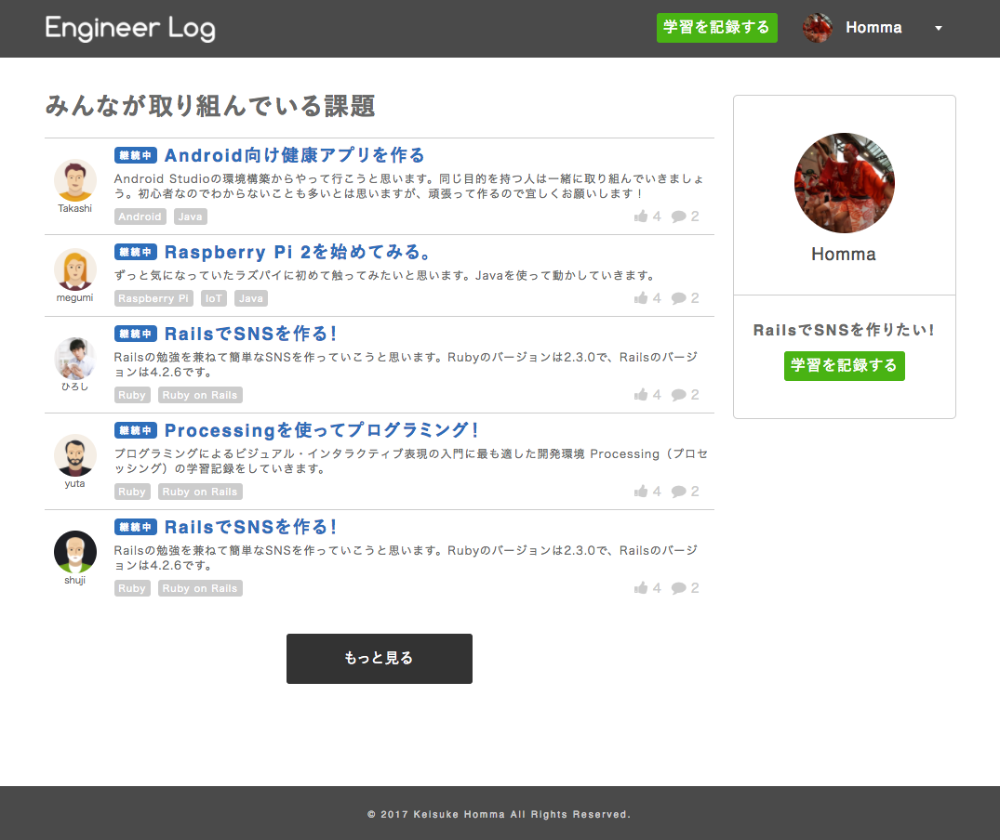
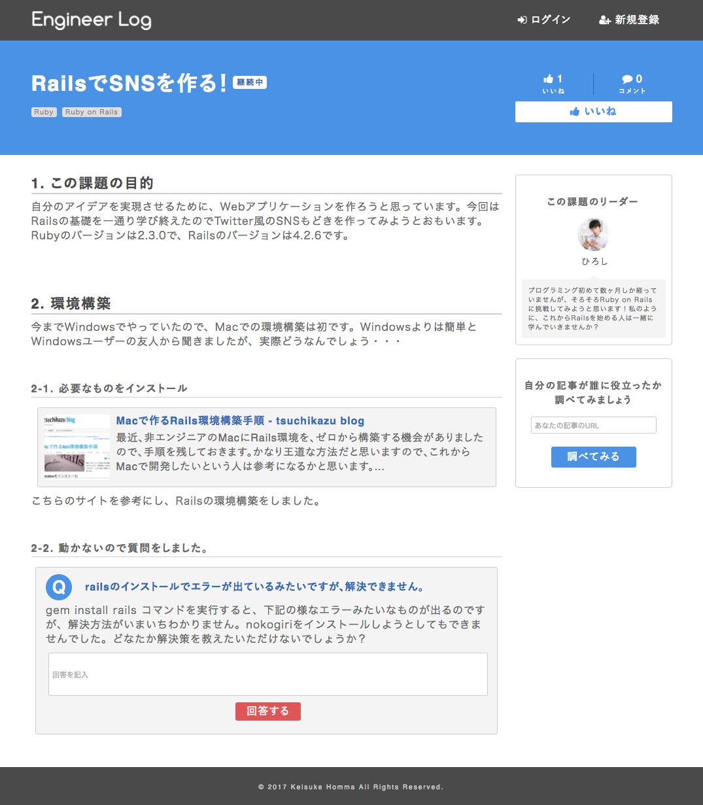
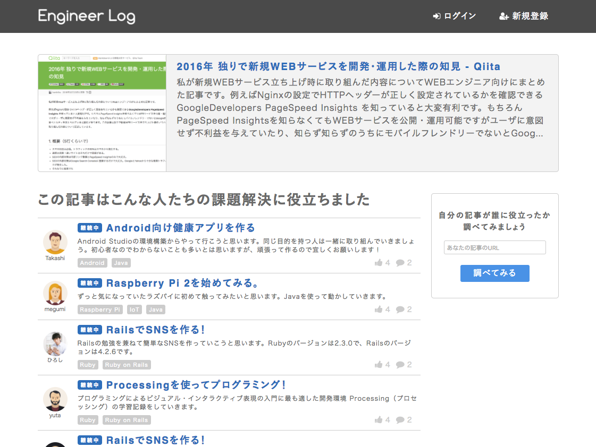

使用スキル・技術・ソフト 企画 Webデザイン コーディング プロトタイプ制作 HTML CSS Experience Design Illustrator Photoshop Dreamweaver PowerPoint 概要 発表時のスライドです。詳細はこちらのスライドをご覧ください。 他の会員の課題一覧ページ  課題詳細ページ  スキルの高いエンジニアが投稿したQiitaなどの記事に影響を受けた初心者エンジニアの一覧  リンク サイト版のプロトタイプ（高スキルエンジニア視点） XDでのプロトタイプ（初心者エンジニア視点） XDでのプロトタイプ（高スキルエンジニア視点）